Pinion
Pinion is a small, quiet place to write. Your notes are plain markdown files in a folder you choose, so they stay yours, and Obsidian can open them too.
Link one thought to the next with [[double brackets]]. Hide the sidebar and nothing is left but the page and your words.
- A few megabytes. No account, no cloud.
- Links, backlinks and #tags, the way Obsidian does them
- Light, dark and true black, in six calm colours
- Your next idea
With voice
Hold a key and talk into any app. Let go and it’s typed for you. Tap the key instead and Pinion keeps listening until you tap again.
Record a meeting and the transcript writes itself into a note as people talk, with you and the other side on separate lines.
The words come from Parakeet, NVIDIA’s speech model, running on your own computer. Nothing you say is sent anywhere.
Download
Notes and nothing else.
Pinion isn’t signed by Apple or Microsoft yet. On a Mac, if it won’t open, go to System Settings, then Privacy & Security, and choose Open Anyway. On Windows, choose More info, then Run anyway.